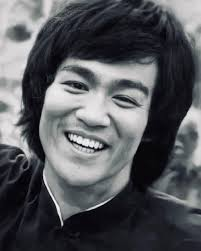

Bruce Lee was a highly acclaimed actor known for his exceptional talent and captivating performances. Born on November 27, 1940, in San Francisco, California, Lee rose to prominence in the martial arts community in the 1960s, establishing himself as one of the most influential martial artists of his generation.
Bruce Lee

Bruce Lee
Biography
Early Life and Career
Bruce Lee was born on November 27, 1940, in San Francisco, California. He showed an early interest in martial arts and began his training in Wing Chun kung fu during his teenage years. Lee gained recognition for his skill and philosophy, which emphasized efficiency, directness, and personal freedom.
Lee's talent and charisma soon caught the attention of filmmakers, and he made his acting debut in Hong Kong cinema with the film "The Big Boss" in 1971. The film's success further propelled his career, and he quickly became known for his martial arts prowess and on-screen presence.
Rise to Fame
Bruce Lee's breakthrough came with the film "Enter the Dragon" in 1973, which cemented his status as a global icon of martial arts cinema. Lee's dynamic fighting style and philosophy resonated with audiences worldwide, and he became an international superstar.
Lee's ability to blend martial arts with philosophy and storytelling revolutionized the genre, inspiring generations of filmmakers and martial artists. His impact on popular culture is immeasurable, and his legacy as a martial arts legend endures to this day.
Legacy
Despite his untimely death on July 20, 1973, at the age of 32, Bruce Lee continues to be remembered as one of the most influential figures in martial arts history. His philosophy of self-expression and personal liberation continues to inspire millions of people around the world.
Beyond his martial arts legacy, Bruce Lee was also known for his advocacy of cross-cultural understanding and his promotion of physical fitness and mental discipline. His impact on popular culture transcends generations, and his teachings remain relevant in today's world.
Quote
“I’m not in this world to live up to your expectations and you’re not in this world to live up to mine.”
-- Bruce Lee
If you want to know more about Bruce Lee visit his Wikipedia